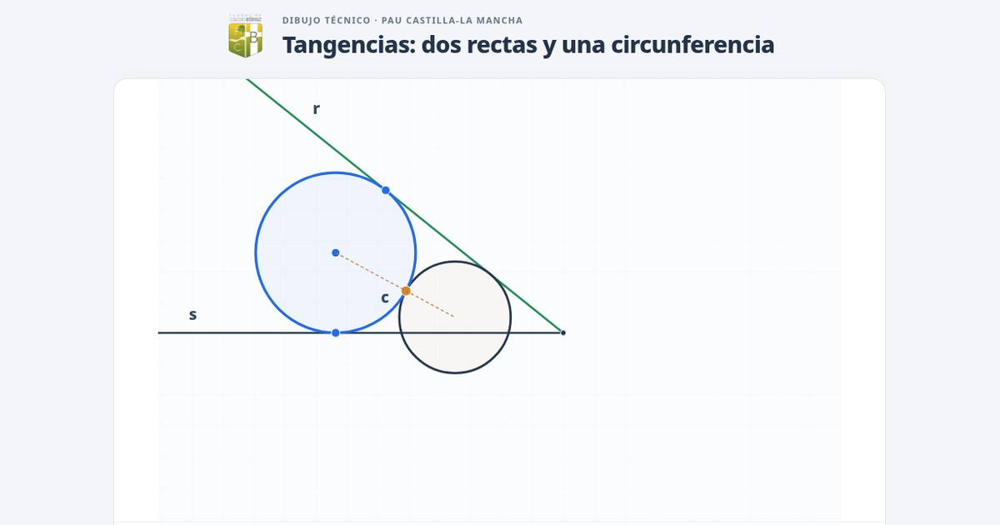

Tangencias · PAU Castilla-La Mancha
Dos rectas y una circunferencia
Construcción animada mediante dilatación y potencia.
Ver animación →
Colegio Bérriz · Píldoras visuales

Construcción animada mediante dilatación y potencia.